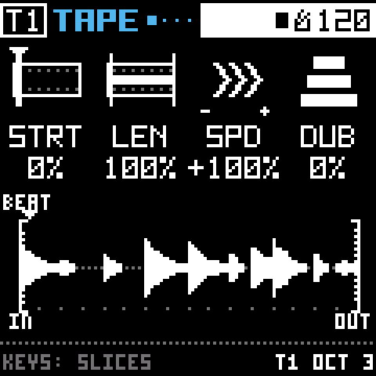
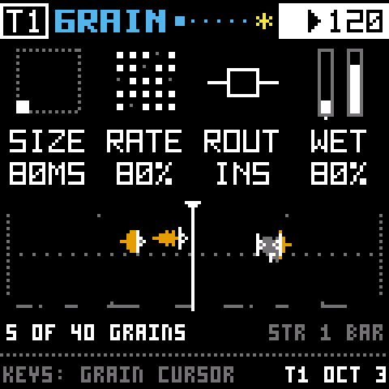
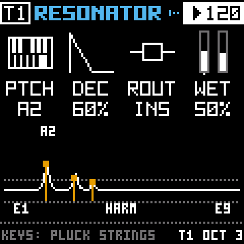
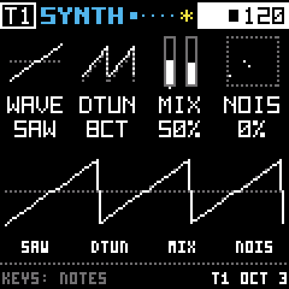
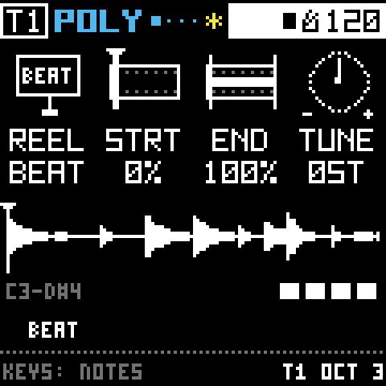
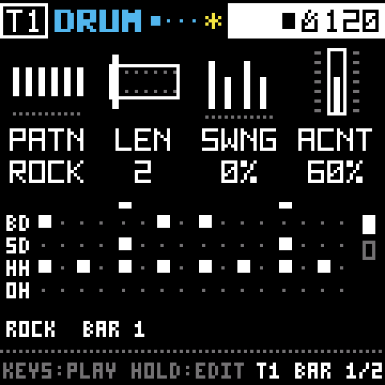

Tape
A loop in RAM (IMA ADPCM at 22.05 kHz). Sixteen slices on the keys, a loop window, speed, reverse and half speed.
Firmware for the M-VAVE FM-1
Four tracks. Four effects in a fixed line. Four modulators that move any knob. No menus: hold a pad, turn a knob.

Bryo replaces the FM-1's firmware with a different instrument. Each track starts with a source and runs through GRAIN, RESONATOR, COLOR and SPACE, always in that order.
The tape is the heart of it: a loop in RAM that plays when you press PLAY, slices on the sixteen white keys, and a REC button that prints the other tracks onto it. The four tracks share 28 seconds of memory and each takes what it records, so a quiet project leaves room for one long one.
Every page shows four values and the four knobs change exactly those. Nothing hides behind a menu. Pages cycle when you press the same pad again, and holding a pad turns the white keys into a page picker.
The screens you see here aren't mockups. They're rendered by the same C code that runs on the FM-1, drawn on its 2×2 px dot grid.
The order never changes, so you always know where a sound is. Every effect's first page ends with its mix (ROUT and WET; SPACE has DLY and VERB), which means one press of EDIT or FX and KNOB 4 brings it in.

A tape loop, a small synth, a sampler across the keys, or a drum machine. Hold HOME and turn SELECT to swap; each source keeps its own knobs, so switching back loses nothing.
To start, track n plays factory reel n: BEAT, BELL, DRON and FOLD, a drum loop and three synthesized modular patches.

Turn WET up and GRAIN keeps the last bars of the track in a live buffer and granulates them: stretched, held at a spot, or delayed with SCAN. Hold the black 0 key to freeze the buffer into a loop; tap it to latch.
BODY puts a floor under the grains, and you choose how many grains a track holds.

Four tuned strings the track rings through, voiced as a chord of the project's scale. On its page the white keys set the root and pluck them, and RES ARP can play them as an arpeggio of their own.

Drive, crush, noise that rides the sound, and tilt. The page draws a sine through the whole stage, with an inset that follows the last knob you touched, so you see what the dirt is doing before you hear it.

A delay and a small room, shared by all four tracks as two sends. They only take memory while DLY or VERB is up, so a dry project gets those bytes back for tape.
A loop in RAM (IMA ADPCM at 22.05 kHz). Sixteen slices on the keys, a loop window, speed, reverse and half speed.

A small subtractive synth, up to three voices, with its own amp envelope and filter.

Any reel, or the track's own tape, played across the keys. Up to four notes, each with its own envelope and filter.

CR-78-inspired, every sound synthesized. Ten written rhythms, and SEED plays a varied take the way a drummer would.

Four modulator slots per track: an LFO, an ADSR, a step sequencer and an envelope follower.
Hold LFO, ENV or SEQ and turn any knob on a source, effect or channel page. That sets how far the slot moves it, from −100 to 100 %. Knobs that move get a purple mark and a rail, so you can tell at a glance what's alive.
The arpeggiator plays notes on SYNTH and POLY, slices on TAPE and hits on DRUM.
There's no released package yet. The hardware checkpoint is under way, and I'd rather ship a build that's been played than one that's only been tested.
If you're comfortable with a toolchain, you can build it today and install it from the command line. Felucca's update path is untouched, so the FM-1 can always go back.
Bryo exists because Felucca exists.
Leo Kuroshita (@kurogedelic) and Hügelton Instruments did the hard part. They reverse-engineered the FM-1, wrote a bare-metal firmware for its JieLi AC79 from scratch, and shipped thirteen engines, a 4-track sequencer, USB audio and a web installer anyone can use. Then they put all of it under the GPL so people like me could learn from it and build on it.
Bryo started from Felucca 1.0.3 (commit b22a24b), imported unmodified so every change after it is easy to see. It still runs on Felucca's hardware layer, update loader, USB and storage, with Leo's copyright lines intact. If Bryo is useful to you, the credit for the foundation goes upstream.
Sponsoring Hügelton keeps work like Felucca going.